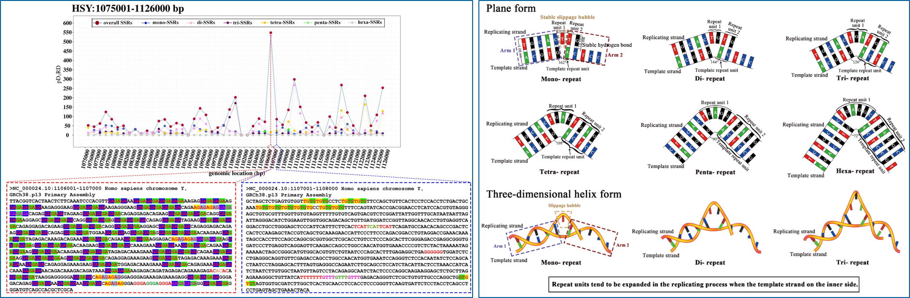

研究重点
绘制 540 张基因组分辨率为 1 Kbp 的短串联重复序列特征分布图谱，发现大量区域性高密度聚集，并观察到极显著的统计学差异。
博士阶段以基因组微卫星序列为主要研究对象，重点分析人类 Y 染色体参考序列上短串联重复序列的分布特征，并围绕短串联重复序列产生机理提出模型解释。
绘制 540 张基因组分辨率为 1 Kbp 的短串联重复序列特征分布图谱，发现大量区域性高密度聚集，并观察到极显著的统计学差异。
这些图谱为揭示特异聚集形成意义提供了重要指导，也为男性遗传性疾病与进化史相关研究提供参考。
研究短串联重复序列产生机理，提出相对半保留学说和折叠复制滑移模型，用于解释基因组扩增与短串联重复序列普遍存在的现象。

短串联重复序列微分算法、图谱展示与折叠复制滑移模型示意。